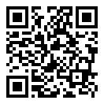

à partir des balises HTML de base, apprends à coder ton propre site web avant de le personnaliser en y ajoutant des instructions CSS.
cet atelier s'adresse aux artistes souhaitant se créer un site web personnel ou professionnel qui ne soit pas un média social.
muni.e de ton ordinateur portable (et d'un chargeur!), l'atelier t'accompagnera dans la création d'une première page web minimaliste.
un éditeur de texte brut (par exemple Notepad (ou bloc-notes) sur Windows, TextEdit sur Mac ou gedit sur Linux) et un navigateur web (celui que tu utilises habituellement) sont les outils informatiques utilisés durant l'atelier.
l'atelier vise à te donner des connaissances de base des langages HTML et CSS avant de mettre le tout en application par une séance pratique où les participant.e.s créeront leur propre page web.
des ressources utiles seront présentées et discutées, notamment sur le design réactif (ou responsive web design), c'est-à-dire qui s'adapte à différentes plateformes (petits et grands écrans, téléphones, etc.), sur la façon d'accéder au mode développement de ton navigateur web et sur les tests d'accessibilité à considérer pour améliorer ton site web.
le prochain atelier HTML/CSS que je donnerai sera affiché ici même !
si tu es intéressé.e à ce que je donne cet atelier à ton centre d'artiste / local de collectif / studio privé, contacte-moi par courriel au info@eviau.net.
partage aisément cet atelier grâce au code QR suivant:
